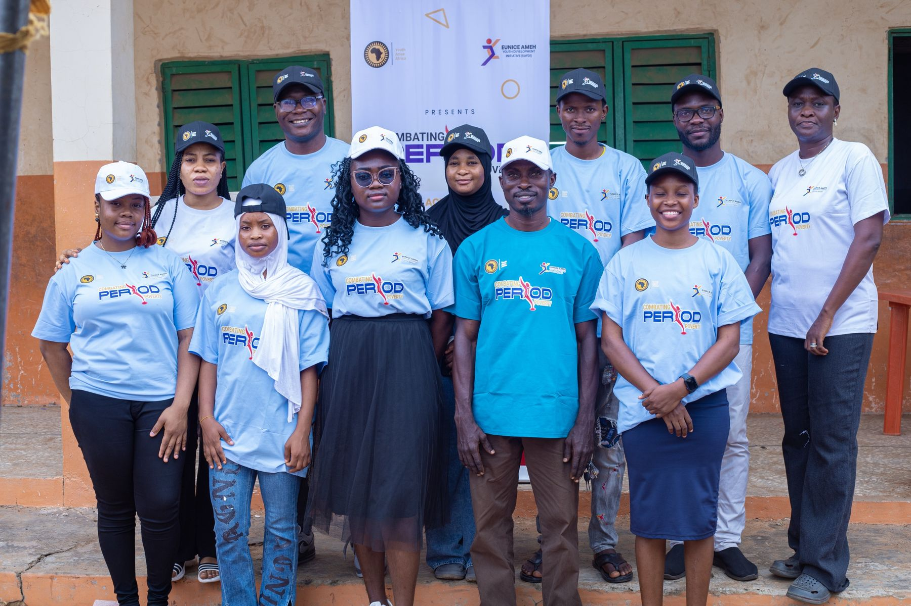

The future we are working toward
A future where young people and women across Africa are empowered with the knowledge, skills, opportunities and confidence to lead, innovate, and contribute meaningfully to sustainable development.
Home / About
About us
The Eunice Ameh Youth Development Initiative exists to make sure young people and women are not waiting for permission to shape their own futures.
Our story
EAYDI grew out of a simple, stubborn observation: across too many communities, talent is evenly distributed but opportunity is not. Young people with real ability leave school early, women with viable businesses cannot access capital, and girls miss a week of class every month for want of a sanitary pad.
None of those are individual failures. They are system failures — and systems can be changed. So we work on both sides at once: building capability in the people we serve, and strengthening the institutions, partnerships and community structures that have to carry the work after we leave.
We do it in the open, with partners, and we hold ourselves accountable to the communities that let us in.

Our volunteer team and partners ahead of a Combating Period Poverty outreach.
A future where young people and women across Africa are empowered with the knowledge, skills, opportunities and confidence to lead, innovate, and contribute meaningfully to sustainable development.
To empower young people and women through education, leadership development, health promotion, economic empowerment and community engagement — fostering a generation of change-makers who drive positive social transformation.
Core values
These are not wall decoration. They are the tests we apply when a decision is difficult.
We act ethically, transparently and responsibly in all our engagements.
We strive for quality, professionalism and continuous improvement.
We embrace diversity and promote equal opportunities for all.
We encourage creativity and adaptive solutions to development challenges.
We remain responsible to our beneficiaries, partners, supporters and communities.
We believe sustainable impact is achieved through partnerships and collective action.
We place young people at the centre of development solutions and decision-making.
Theory of change
If young people and women are provided with access to quality learning opportunities, leadership development, health education, economic empowerment initiatives and supportive networks — while also strengthening the institutional systems required to sustain impact — then they will develop the skills, confidence, resilience and opportunities needed to improve their lives and contribute meaningfully to community and national development.
This will lead to increased civic participation, improved livelihoods, healthier communities, greater gender equality, and stronger pathways toward sustainable development.
Learning opportunities, leadership training, health education, economic empowerment initiatives, supportive peer networks — plus the institutional strengthening that keeps them running.
Skills, confidence and resilience in individuals; capable, better-resourced local institutions; young people and women actively taking part in decisions that affect them.
Higher civic participation, improved livelihoods, healthier communities, greater gender equality, and durable pathways toward sustainable development.
How we work
We enter through existing local structures — schools, faith leaders, women’s groups — and design with them, not for them.
Every programme carries baseline data, follow-up and honest reporting — including what did not work.
Volunteers and alumni run sessions, sit in planning meetings and shape the next cycle of work.
Success is a community that keeps the work going without us. We design the exit from day one.
If you lead a school, an organisation or a community group, we would like to hear from you.